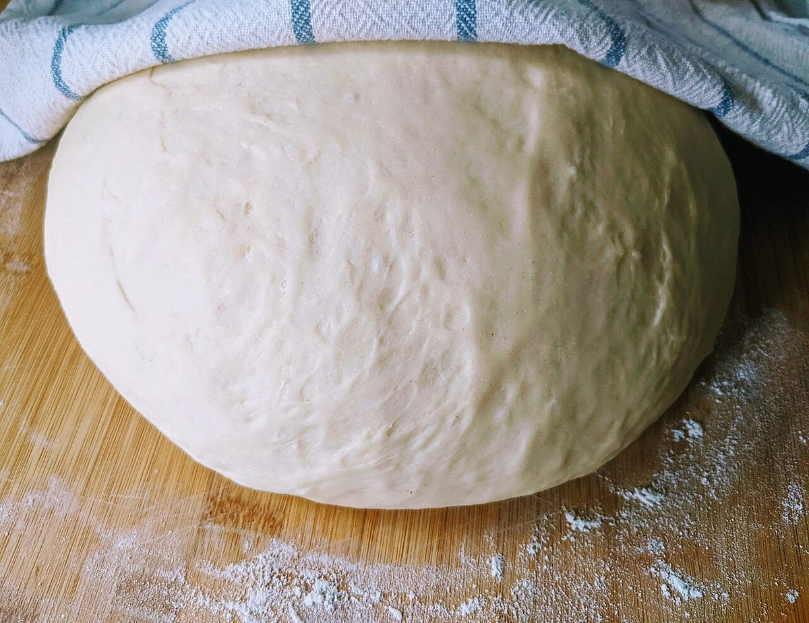
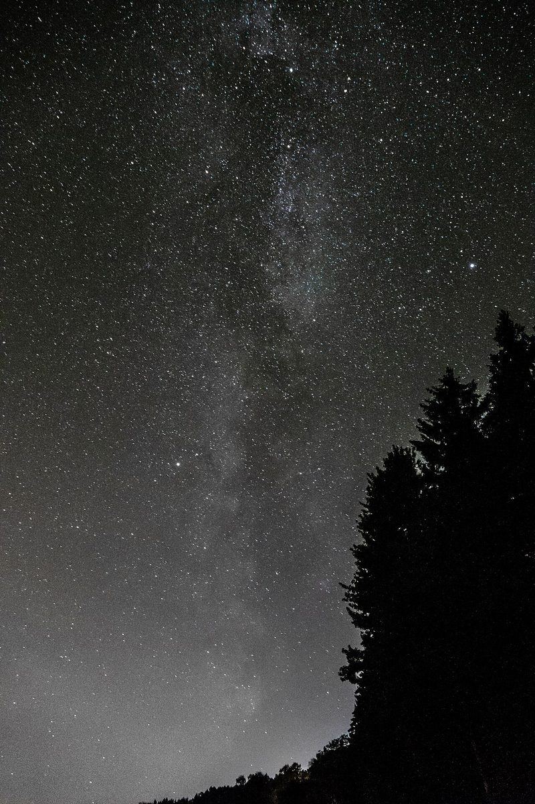

制作側の連想
「星」の字から、星の一生の五段階
屋号の由来は分かりません。制作側は「星」の字から、星が生まれて年を重ねる流れを連想し、星間雲から星くずまでの五段階を、パンの支度に見立てて並べました。お店の理念・由来とは無関係の、制作側の連想です。
星の一生・五段階(イメージ)
粉から星くずまで。
写真は石川町のものではありません。段階のイメージで選んだ、国外・撮影地不明のフリー素材です。
- 一
星間雲
粉のはじまり
星は、ガスとちりが集まる雲から生まれると言われます。パンのはじまりは粉。ここでは、小麦粉の写真を雲に見立てました。

小麦粉のイメージ - 二
原始星
ねかせる
雲がまとまって星の芽になる段階を、ふくらみを待つ生地に重ねました。

生地のイメージ - 三
主系列星
燃える
長く安定して輝く時期を、窯の炎に重ねました。

窯の炎のイメージ - 四
赤色巨星
ふくらむ
大きくふくらんだ星の姿を、丸くて大きなパンの写真に重ねました。

丸パンのイメージ - 五
星くず
ちらばる
星の最期にまかれた粒がまた次の星になる、という話を、焼き網に並ぶ小さなパンに重ねました。

小さなパンのイメージ
夜空のイメージ
天の川の下で。
スウェーデンで撮られたフリー素材の夜空です。お店の周りの景色ではありません。

ご案内
お店のこと(確認できたものだけ)
| 所在地 | 〒963-7836 福島県石川郡石川町塩沢割田作34−４２ |
|---|---|
| 電話 | 0247-57-8073 |
| 営業時間 | 準備中 |
| 定休日 | 準備中 |
| ご予約 | 準備中 |
| 駐車場 | 準備中 |
| SNS | Instagram @hoshinoya2023 |